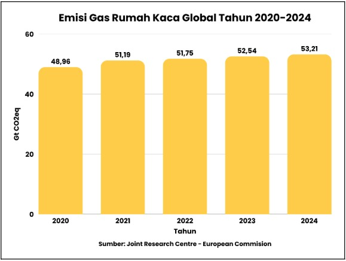
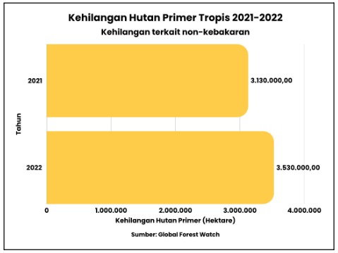
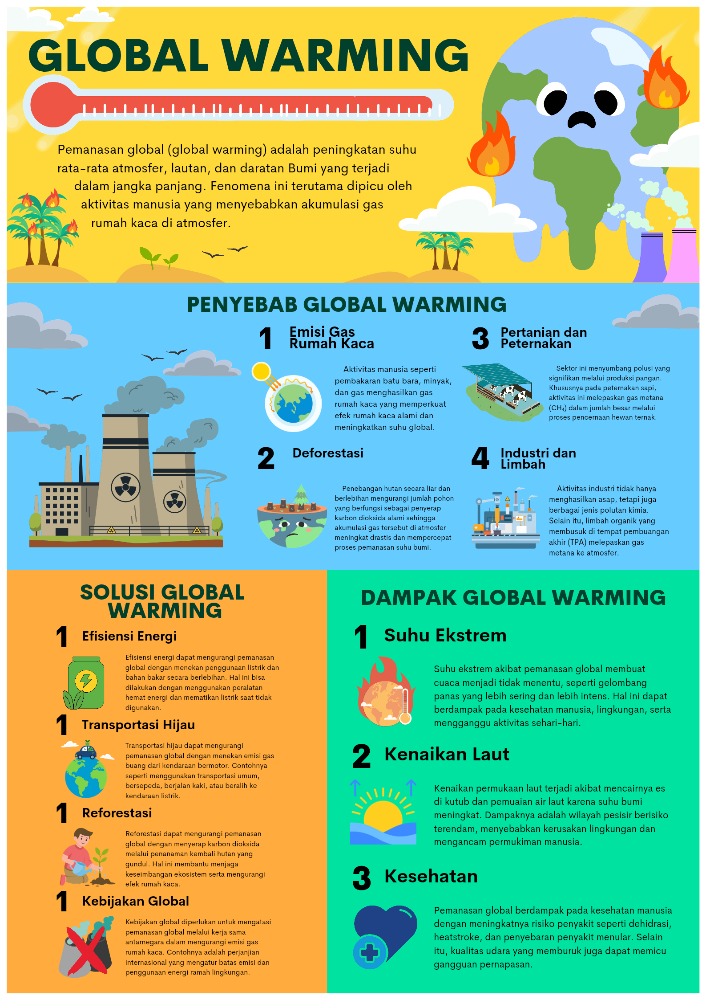

Pemanasan global (global warming) adalah peningkatan suhu rata-rata atmosfer, lautan, dan daratan Bumi secara bertahap dalam jangka panjang. Fenomena ini dipicu oleh akumulasi gas rumah kaca yang memerangkan panas di dalam atmosfer.
Berdasarkan data terbaru Maret 2026, suhu rata-rata global telah merangkak naik melebihi tingkat pra-industri, memicu anomali cuaca yang kian nyata di berbagai belahan dunia.


Konsekuensi dari krisis iklim ini sudah kita rasakan secara langsung:
Bukan sekadar teori, berikut adalah langkah krusial untuk menahan laju pemanasan global:

Data Visualisasi Krisis Iklim 2026